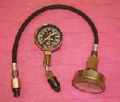
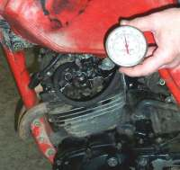
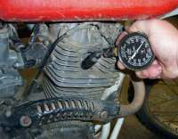
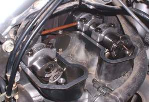
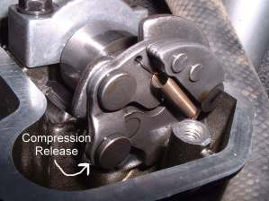
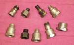
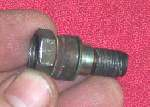
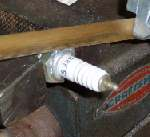
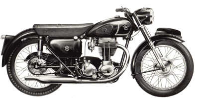
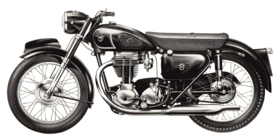

¶

You can have the hottest cam, perfect ignition timing, clean carburetor, and fresh gas, but without good compression... that engine is not going to run. The first thing I do, when a non running bike comes in, is to run a compression test. If the engine does not have at least 100 PSI (Pounds per Square Inch) in each cylinder, I won't work on it, except to rebuild it. It would be a waste of the customers money if I "Tried" to make it run.100 PSI is the minimum. It should be 125 to 150, and some engines have as high as 170 PSI or more. Yes, an engine can run with lower compression, but it will run very poorly. I've seen old, big, multi-cylinder outboards run with as little as 65 PSI and some lawnmowers run even less. However, for motorcycle engines 100 PSI is really on deaths doorway. Use your time to rebuild the engine, not to get another five or ten hours of life (maybe!) out of it.
 
When you remove the spark plug, it might be a good idea to loosen the plug a bit and then blow out and around the plug with compressed air. This is to blow out any bits of dirt that might fall into the engine through the spark plug hole, as you remove the plug. This is an especially good idea on dirt bike engines with deep, forward facing, spark plug holes.
Technically, You should do this when the engine is hot, but I don't like burning my fingers, so I always do it when the engine is cold. A hot engine would probably read a few pounds more, but a cold reading will tell you what you need to know. Run the test on each cylinder. All the cylinders on an engine should be within ten pounds of each other. In other words, a four cylinder engine reading 145 PSI, 150 PSI, 147 PSI, and 155 PSI would be considered good. If it had 135 PSI, 150 PSI, 150 PSI and 155 PSI, it would not be considered good. Something is starting to go wrong with that first cylinder.
People tell me "I have a mis-fire on my four cylinder Motorcycle. I cleaned the Carburetors three times and it still does not run right. What gives?" This gives. If one cylinder has low compression the engine will NEVER run right. Run a Compression Test first. Always, always, always run the Compression Test FIRST.
OK, you have a cylinder that reads low. Is it valves or rings, leaking that compression? A quick, down and dirty test is this. Squirt some oil, maybe a teaspoon's worth, into the cylinder through the spark plug hole. Now run the test again. The oil will hold compression for several turns of the engine. If your retest with oil gives higher compression, you will know the rings are worn. If there is no change in compression, it's the valves that are leaking. If you think it's the valves, it's always a good idea to check the valve tappet clearance. If the valves are tight, they could be leaking compression. If the valves are tight, reset them to the proper clearance and test again. if your compression comes back don't thank your luck, thank Jesus! He just saved you an engine rebuild.
Just to make things interesting, a number of the newer, big single, dirt bikes have an automatic, spring loaded, Compression Release located on the Exhaust Camshaft. These bikes will have a normal compression pressure that is quite low, because of the Compression Release. For example, the Kawasaki KLX650A should read 50-85 PSI. Kawasaki KLX650C is 57-87 PSI. Honda XR650R is 87 PSI with decompressor applied and 160 PSI with decompressor not applied. It jumps all over the place so check your shop manual before you rip the top end off thinking the compression is too low.
Once the engine starts, the compression goes way up as the centrifugal force acts on the spring loaded Compression Release giving the engine full power. With a low starting compression the engine can be easily Kick Started. Same with an Electric Starter. The stress on the Electric Starter is far less so a smaller, lighter Electric Starter can be used.
 Automatic Compression Release #1 |
 Automatic Compression Release #2 |
This test is one of the most important tests you can make. Time and time again, I see people work for hours trying to get an engine to run or to run good. I ask "Did you run a compression test?" they say "Oh, it has compression" I ask again, "Did you do an actual test? What was the PSI?" They say "It feels like it does." So they run a test, and guess what? No, or little, compression. Don't waste you time on a dead engine. Run a compression test first thing.
If you have an engine with Constant Velocity carbs the test is still done the same, with the throttles wide open. You might think they would read different, but they don't seem to.
 

If you don't have a compression gauge handy, all is not lost. A down and dirty way to do it is to simply press your thumb over the spark plug hole and hold it there tight. Now have someone kick the engine over. No matter how hard you push your thumb, the compression pressure should blow it off the hole smartly. If it won't, you don't have enough compression to start the engine.

 |
 |
Copyright © 1999-2015 dansmc.com. All rights reserved.